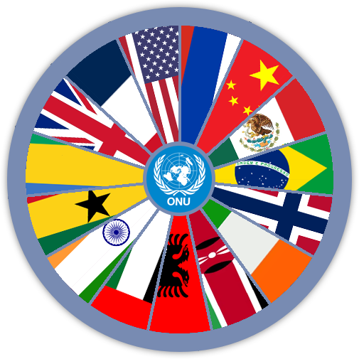

Foi criada em 1945 pelos representantes de 51 países, reunidos na
conferência de São Francisco, aprovaram a carta de princípios dessa
organização. O objetivo da ONU é preservar a paz e a segurança no mundo,
promovendo a cooperação internacional.
a ONU é dividia em 6 orgãos:
assembleia geral (principal orgão)
conselho de segurança (possui maior poder)
conselho econômico e social
tribunal internacional de justiça
conselho de tutela
secretariano
Assembleia Geral
A Assembleia Geral é o orgão mais geral das Nações Unidas, é o unico
que conta com voto igualitário. A assembleia se reune anualmente,
entre novembro e dezembro, então de janeiro a novembro do ano seguinte
as pautas mais importantes são debatidas.
O Brasil sempre abre a Assemblia geral da Onu, isso por que na
primeira Assembleia geral especial da onu, em 1947, o brasileiro
Oswaldo Aranha abriu a sessão.
Alguns dos principais papeis da Assembleia geral:
Aprovar um orçamento para as Nações Unidas;
Eleger os membros do Conselho de segurança;
Fazer recomendações para manter a paz em conflitos internacionais;
Começar estudos e promover cooperação internacional para a relização
dos direitos humanos e das liberdades fundamentais, além de promover
a colaboração internacional nos campos economicos, humanitarios,
culturais, educacionais e na saude;
Sempre tentar chegar em resolução pacificas para conflitos;
Analisar os relatorios dos outros orgãos da onu.
Além de poder tomar decisões em casos de violações da paz caso algum
membro permanente do Conselho de segurança vete a pauta.
Conselho de Segurança
O conselho de segurança é o principal órgão da Organização das Nações
Unidas (ONU), foi criado logo após o fim da segunda guerra, em 1945,
para garantir a paz e a segurança internacional, impedindo que outro
acontecimento como esse aconteça novamente. Ele que autoriza as sanções
economicas, o envio de missões de paz e o uso de força em determinada
situação.
É composto por 5 membros permanentes: Estados Unidos, França, Russia,
China e Reino Unido. e mais 10 membros rotativos, que são eleitos pela
assembleia geral e cumprem um mandato de dois anos. É separados por
regiões e continentes. Os membros permanentes foram escolhidos logo no
começo do órgão, eram eles que representavam os responsáveis pela
estabilidade internacional. Recebendo eles o direito a vetos e
indiretamente os tornando mais poderosos e influentes que outros países
do conselho.
Quer saber um pouco sobre os países que estão no Conselho de
Segurança? Gire a Roleta!!!

Caso queira saber sobre um país em especifico:
País:
Mandato:
Região:
Grupos econômicos:
Conselho Econômico e Social
Tem 54 membros que são eleitos com um mandato de 3 anos na Assembleia
Geral.
É o conselho central para debates sobre questões economicas, ambientais
e sociais, onde é formulado recomendações para os membros da onu.
Existem as seguintes comissões nesse conselho:
FAO( para alimentação e agricultura)
OIT (Organização Internacional do Trabalho)
A OMS (Organização Mundial de Saude)
A unesco ( Pra educação ciencia e Cultura)
Conselho de direitos humanos.
Tribunal Internacional de Justiça
A principal função do Tribunal Internacional de Justiça é resolver
conflitos jurídicos a ele submetidos por Estados e emitir pareceres
sobre questões jurídicas apresentadas ordinariamente pela Assembleia
Geral das Nações Unidas ou pelo Conselho de Segurança das Nações Unidas.
Eles podem solicitar parecer consultivo órgãos e agências especializadas
autorizados pela Assembleia Geral da ONU, desde que as questões
submetidas estejam dentro de sua esfera de atividade
Conselho de Tutela
O Conselho de Tutela tinha a função de proteger povos sem governo
próprio sendo composto por membros do Conselho de Segurança e outros
eleitos pela Assembleia Geral. Foi desativado em 1997, três anos após a
independência da última colônia, Palau, que se tornou um Estado membro
das Nações Unidas, em dezembro de 1994. O conselho só se reúne a pedido
da Assembleia Geral.
secretariano
A Secretaria-Geral é o órgão administrativo da Organização das Nações
Unidas (ONU), cujo representante máximo é o “Secretário-Geral” e que, no
que diz respeito às relações da Organização com outras Organizações ou
Estados, é a autoridade máxima das Nações. Unidos. Embora a posição do
Secretário-Geral tendesse a ser passiva, após a nomeação de Kofi Annan
(1997-2006), este passou a ter uma influência transversal nas relações
internacionais, no Direito Internacional e na mediação em conflitos
militares.
O Secretariado Geral da ONU é dirigido pelo secretário-geral, a
principal autoridade da ONU, que tem a função de administrar a
instituição.
É eleito por 5 anos (com direito a reeleição), pelo Conselho de
Segurança e aprovado pela Assembleia Geral.
Em 2019, o diplomata português Antônio Guterres(na imagem) ocupa esta função. Seu
mandato termina em 2022.


 Tem 54 membros que são eleitos com um mandato de 3 anos na Assembleia
Geral.
Tem 54 membros que são eleitos com um mandato de 3 anos na Assembleia
Geral.
 A principal função do Tribunal Internacional de Justiça é resolver
conflitos jurídicos a ele submetidos por Estados e emitir pareceres
sobre questões jurídicas apresentadas ordinariamente pela Assembleia
Geral das Nações Unidas ou pelo Conselho de Segurança das Nações Unidas.
Eles podem solicitar parecer consultivo órgãos e agências especializadas
autorizados pela Assembleia Geral da ONU, desde que as questões
submetidas estejam dentro de sua esfera de atividade
A principal função do Tribunal Internacional de Justiça é resolver
conflitos jurídicos a ele submetidos por Estados e emitir pareceres
sobre questões jurídicas apresentadas ordinariamente pela Assembleia
Geral das Nações Unidas ou pelo Conselho de Segurança das Nações Unidas.
Eles podem solicitar parecer consultivo órgãos e agências especializadas
autorizados pela Assembleia Geral da ONU, desde que as questões
submetidas estejam dentro de sua esfera de atividade
 O Conselho de Tutela tinha a função de proteger povos sem governo
próprio sendo composto por membros do Conselho de Segurança e outros
eleitos pela Assembleia Geral. Foi desativado em 1997, três anos após a
independência da última colônia, Palau, que se tornou um Estado membro
das Nações Unidas, em dezembro de 1994. O conselho só se reúne a pedido
da Assembleia Geral.
O Conselho de Tutela tinha a função de proteger povos sem governo
próprio sendo composto por membros do Conselho de Segurança e outros
eleitos pela Assembleia Geral. Foi desativado em 1997, três anos após a
independência da última colônia, Palau, que se tornou um Estado membro
das Nações Unidas, em dezembro de 1994. O conselho só se reúne a pedido
da Assembleia Geral.
 A Secretaria-Geral é o órgão administrativo da Organização das Nações
Unidas (ONU), cujo representante máximo é o “Secretário-Geral” e que, no
que diz respeito às relações da Organização com outras Organizações ou
Estados, é a autoridade máxima das Nações. Unidos. Embora a posição do
Secretário-Geral tendesse a ser passiva, após a nomeação de Kofi Annan
(1997-2006), este passou a ter uma influência transversal nas relações
internacionais, no Direito Internacional e na mediação em conflitos
militares.
A Secretaria-Geral é o órgão administrativo da Organização das Nações
Unidas (ONU), cujo representante máximo é o “Secretário-Geral” e que, no
que diz respeito às relações da Organização com outras Organizações ou
Estados, é a autoridade máxima das Nações. Unidos. Embora a posição do
Secretário-Geral tendesse a ser passiva, após a nomeação de Kofi Annan
(1997-2006), este passou a ter uma influência transversal nas relações
internacionais, no Direito Internacional e na mediação em conflitos
militares.